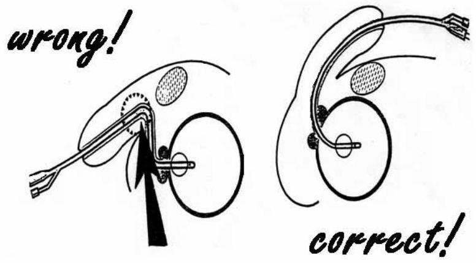
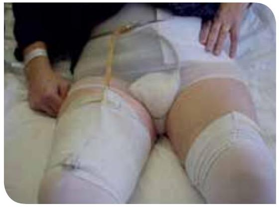
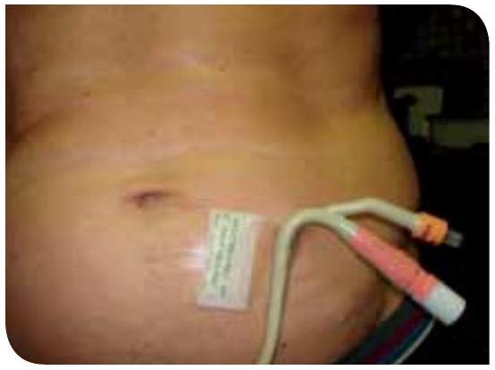
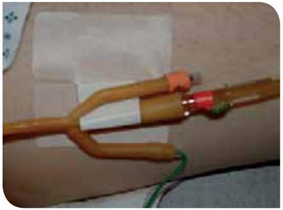

Nursing Management and Procedures
6. Principles of management of nursing intervention
6.1 Patient preparation
Consent
Catheterisation is an invasive procedure that can cause embarrassment, physical and psychological discomfort and impact on the patient's self-image. To ensure the patient is fully prepared for catheterisation it is the responsibility of the health care professional to inform the patient of the reasons and necessity for the procedure, and obtain the patient's permission. [61] In many areas of medicine, patients are required to sign a consent form that indicates agreement for the practitioner to undertake a procedure. It also implies an understanding of the event and the associated potential complications/problems. At present it is not common practice within Europe for patients to provide written consent for catheterisation; it is however a necessity that verbal consent and agreement is reached and the relevant information is recorded in the patient's medical and/or nursing notes. [62]
Information and support
Explaining the procedure and providing the reason for catheterisation to the patient will help reduce patient anxiety and embarrassment and help the patient to report any problems that may occur while the catheter is in-situ. [63] Relaxing the patient by offering reassurance and support will help for smoother insertion of the catheter and assist in avoiding unnecessary discomfort and the potential of urethral trauma during the insertion. [64, 65]
Equipment and preparation
Even if catheterisation is a medical order, the health care professional should take a brief medical patient history, especially about urological conditions before the procedure.
Catheterisation is a sterile procedure as it involves instrumentation of a sterile tract. It is imperative that the health care professional has a good understanding of the principles of the aseptic procedure as this will help to reduce the risk of UTI. [66]
Lubricating gel
Catheterisation can be painful in both males and females. The use of anaesthetic lubricating gels is well recognised for male catheterisation. An appropriate sterile single-use syringe with lubricant should be used before catheter insertion of a non-lubricated catheter to minimise urethral trauma, discomfort and infection. [8, 33] However, it is essential to ask the patient if they have any sensitivity to lignocaine/lidocaine, chlorhexidine or latex before commencing the procedure. There have been reported cases of anaphylaxis attributed to the chlorhexidine component in lubricating gel. [67] Ten to fifteen ml of the gel is instilled directly into the urethra until this volume reaches the sphincter/bladder neck region. Blandy [68] and Colley [69] recommend a 3 to 5 minute gap before starting the catheterisation after instilling the gel, but it is important to follow manufacturer's guidance. A maximised anaesthetic effect will help the patient to relax and the insertion of the catheter should be easier. [70]
If the lubricant contains lignocaine/lidocaine or chlorhexidine, care should be taken if the patient has an open wound or severe damaged mucous membranes and/or infections in the regions where the lubricant will be used. In patients with severe disorders of the impulse conduction system or epilepsy as well as women in the first three months of pregnancy or breast feeding (Package instruction leaflets Instillagel® and Xylocaine®), the urologist should be asked permission to use a lignocaine/lidocaine containing lubricant.
Set for catheterisation
Fixed catheter sets are widely used. Different hospitals use different sets for catheterisation (refer to local policy). There is no standard list of materials for a catheterisation set / pack. You should check individual packs for required contents, the catheter and drainage bag are usually separate from the catheterisation packs.
There is no literature on a scientific basis about the advantage or disadvantage of using such a catheter-set. Using a set could be an advantage in educational situations or in emergency situations because you only need to search for a set and the catheter with a bag and not for all single materials you need to insert a catheter. [33]
| Recommendations | LE | GR |
|---|---|---|
| - Verbal consent should be obtained from the patient for indwelling catheterisation before starting the procedure | 4 | C |
| - It is imperative that the health care professional has a good understanding of the principles of the aseptic procedure as this will help to reduce the risk of UTI [16,66] | 1b | B |
| - It is essential to ask the patient if they have any sensitivity for chlorhexidine [67], lignocaine/lidocaine or latex before commencing the procedure | 4 | C |
6.2 Urethral catheter - female and male insertion procedure
For practical guidelines on how to insert a male or a female urethral catheter see Appendix B and C.
The recommendations below are for catheterisation in males; recommendations with an * are also relevant for females.
| Recommendations | LE | GR |
|---|---|---|
| - If resistance is felt at the external sphincter, increase the traction on the penis slightly and apply steady, gentle pressure on the catheter. Ask the patient to strain gently as if passing urine | 4 | C |
| - In case of inability to negotiate the catheter past the U-shaped bulbar urethra use a curved tip (Tiemann) catheter or hold the penis in an upright position to straighten out the curves | 4 | C |
| - Special catheters like Tiemann e.g., need a special technique and should be attempted by those with experience and training [65, 71, 72, 73] | 4 | C |
| - Inserting a Tiemann tip, the tip has to point upward in the 12 o'clock position to facilitate passage around the prostate gland [52] | 4 | C |
| -When inserting the urethral catheter use a sterile single-use packet of lubricant jelly [16] * | 4 | C |
| - Routine use of antiseptic lubricants for inserting the catheter is not necessary [16] * | 4 | C |
| - A small lumen catheter can buckle/kink in the urethra; in some instance a slightly larger Ch size might help [73] * | 4 | C |
| - Further research is needed for using the non-touch technique for indwelling urethral catheterisation * | Unresolved issue | |
| - After the catheter has been inserted using aseptic technique, it should immediately be connected to the sterile bag, because an aseptic closed drainage system minimises the risk of catheter-associated urinary tract infections * | 1A | A |
* Recommendation also relevant for females
6.3 Suprapubic catheter insertion procedure
There are two techniques to insert a suprapubic catheter. The classic method is with the use of sterile gloves. The second method is the "no-touch technique" without sterile gloves. Instead, the sterile package of the catheter is used to touch the catheter. The no-touch technique is probably to be preferred, because there is less risk of contamination, but unfortunately there is no evidence in the literature available.
If the patient does not have a readily palpable bladder then ideally, the bladder should be filled with at least 300 ml prior to insertion of a suprapubic catheter (SPC). Ultrasonography may also be used as an adjunct to SPC insertion or with cystoscopy to ensure that the needle used to make the SPC tract can be visualised entering the bladder at an appropriate point on the anterior bladder wall.
In patients with a history of lower abdominal surgery or the bladder cannot be distended then an open procedure may have to be performed for insertion of the SPC. (LE 3) [74]
For practical guidelines on how to insert a suprapubic balloon catheter see Appendix D.
| Recommendations | LE | GR |
|---|---|---|
| - Further research is needed for using the non-touch technique for suprapubic catheters | Unresolved issue | |
6.4 Difficulties that may occur during insertion
Difficulty in catheterising the patient can be caused by a variety of reasons. Medical advice and support should be sought if problems during or after the insertion occur. Complications associated with catheters include UTI, trauma and inflammatory reactions, urethral stricture, calculi, hypospadias, false route and possibly carcinoma of the bladder. [75] These can result in one or more of the following symptoms occurring: pain, bypassing, blockage, catheter expulsion and bleeding.
6.5 Catheter care / maintenance
6.5.1 Meatal cleansing
Routine daily personal hygiene is all that is needed to maintain meatal hygiene. [13, 76, 77, 78] Trials of various cleansing agents, e.g. chlorhexidine, saline etc., have failed to demonstrate a reduction in bacterial growth rate [79], meaning soap and water is sufficient to achieve effective meatal cleansing. [65, 80, 81] However attention must be given to educating noncircumcised patients to clean underneath their foreskin daily to remove smegma, as this may increase the patient's risk of developing a UTI in addition to causing trauma and ulceration to the meatus and glans penis. [76, 82]
There is no evidence that routine application of antimicrobial preparations around the meatus will prevent infections. [65, 81, 83]
| Recommendations | LE | GR |
|---|---|---|
| - Routine daily hygiene (water and soap) is appropriate for meatal cleansing | 1b | B |
| - Application of topical antibiotic cream to the meatus around the catheter does not reduce bacteriuria. [65, 81, 83] | 1b | B |
6.5.2 Care of urethral catheters
Whichever bag is chosen, extensive measures should also be taken to maintain unobstructed flow. [16] To prevent obstruction, the catheter and collecting tube should be kept free from kinking and the collecting bag has to be kept below the level of the bladder at all times (to allow urine to drain by gravity) and must never be rested on the floor. [16] When emptying the collecting bag regularly use a separate, clean collecting container for each patient; avoid splashing, and prevent contact of the drainage spigot with the non-sterile collecting container. [16]
| Recommendations | LE | GR |
|---|---|---|
| - Perform hand hygiene immediately before and after any manipulation of the catheter and system. Wear disposable gloves when handling the system | 1b | B |
| - Maintain unobstructed urine flow [16] | 1b | B |
| - Keep the catheter and collecting tube free from kinking | 1b | B |
| - Keep the collecting bag below the level of the bladder at all times. Do not rest the bag on the floor | 1b | B |
| - Empty the collecting bag regularly using a separate container for each patient; avoid splashing, and prevent contact of the drainage spigot with the non-sterile collecting container | 1b | B |
6.5.3 Care of the suprapubic catheter site
| Recommendations | LE | GR |
|---|---|---|
| - Always ensure good hand hygiene is performed prior to any intervention [85] and use protective equipment e.g. gloves | 4 | C |
| - Suprapubic catheter site should be cleaned daily with soap and water. Excess cleansing is not required [65, 81] and may increase the risk of infection | 1b | B |
| - Observe the cystostomy site for signs of infection and over granulation | 4 | C |
| - Antimicrobial agents should not routinely or as prophylactic treatment be applied to the cystostomy site to prevent infection [81, 83] | 1b | A |
| - Dressings are best avoided, if a dressing is used to contain a discharge this should be undertaken with strict aseptic technique to protect against infection | 4 | C |
| - Wherever possible, patients should be encouraged to change their own dressings [23] | 4 | C |
6.5.4 Observation and management of catheter drainage
The observations relate to the indication for catheterisation. Post-operatively catheterisation is often performed to monitor urine output. The monitoring of urine output is vital to ensure that the bladder continues to empty and that excessive diuresis does not occur. [84] In home settings observations relate to common complications to long-term catheters such as blockage and infections.
For Common problems with indwelling catheter equipment, see Appendix E. For Observation of urinary drainage, see Appendix F.
Indwelling catheters with open-drainage systems result in bacteriuria in almost 100% of cases within 3-4 days. [20,55] By using closed urinary drainage systems bacteriuria cannot be prevented, but it can be delayed. Almost all patients will develop bacteriuria within approximately 4 weeks. [20] Breaking a closed drainage system to obtain urine samples therefore increases the risk of CAUTI. [85]
| Recommendations | LE | GR |
|---|---|---|
| - Maintain unobstructed urine flow [16] | 1b | B |
| - Keep the catheter and collecting tube free from kinking | 1b | B |
| - Keep the collecting bag below the level of the bladder at all times | 1b | B |
| -When emptying the collecting bag regularly use a separate, clean collecting container for each patient; avoid splashing, and prevent contact of the drainage spigot with the non sterile collecting container | 1b | B |
| - Unnecessary disconnection of a sealed (pre-connected) drainage system should be avoided but if it occurs the catheter and collecting system have to be replaced using aseptic technique and sterile equipment | 1b | B |
| - Catheter and drainage tubes should never be disconnected unless for good clinical reason | 2b | B |
| - Disinfect the catheter/collecting tube junction when connected | 4 | C |
| - Use of a urimeter which allows accurate measurement is recommended in intensive care patients [86] | 2b | B |
| - Complex urinary drainage systems are not necessary for routine use | 2b | B |
| - Extensive measures should also be taken to maintain unobstructed flow | 1b | B |
| - Changing indwelling catheters or drainage bags at routine, fixed intervals is not recommended. Rather, catheters and drainage bags should be changed based on clinical indications such as infection, obstruction, or when the closed system is compromised [16] | 1b | B |
6.5.5 Stabilising of the urethral catheter
If the catheter is not secured properly, it may migrate from its intended point of stabilisation. Stabilising urethral catheters can reduce adverse events such as dislodgment, tissue trauma, inflammation and urinary tract infection. [87, 88, 89] Urethral trauma can be caused by any catheter size or by forced insertion of the catheter. Urethral trauma should be minimised by the use of adequate lubricant and the smallest possible catheter size. [20] (LE: 1b) Inflammation and trauma may also occur when the device is unsecured. Movement-induced trauma can lead to urinary tract infection and tissue necrosis. The use of a securement device reduces both the physical and psychological trauma to the patient by decreasing the need for reinsertion. If the catheter bag becomes too heavy with urine, and it is not supported properly, the bag can pull on the catheter. This, along with catheter movement at the site of insertion, can cause discomfort and irritation to the patient. [16, 90] To avoid necrosis at the urethral penile-scrotal junction caused by prolonged catheter pressure, it is recommended to secure urinary catheters to males' abdomen. [87] The catheter has to be positioned in a soft curve towards the femur (Fig. 35) and can be fixed with a securing device, tape, velcro™ or a pocket for the bag (Fig. 36, 37, 38). Although the references are only for urethral catheterisation the same principles of stabilisation apply to suprapubic catheters. [54]
Fig. 35 Fixation of the catheter
Fig. 36 Fixation of a urethral catheter
Fig. 37 Fixation of the urethral catheter/leg bag
Fig. 38 Fixation of the catheter with a securement device
| Recommendations | LE | GR |
|---|---|---|
| - It is important to secure the catheter after insertion to prevent movement and urethral traction [16] | 1b | B |
| - It is important to stabilise the urinary catheter | 1b | A |
| - In males secure urinary catheter to the abdomen and in females to the leg | 4 | C |
6.5.6 Clamping or not
Bladder dysfunction and postoperative voiding impairment have been documented following catheterisation and these can lead to infections of the urinary tract. The intermittent clamping of the indwelling urethral catheter draining tube prior to withdrawal has been suggested on the basis that this simulates normal filling and emptying of the bladder. While clamping catheters might minimise postoperative neurogenic urinary dysfunction, it could also result in bladder infection or distension. A Cochrane review investigated the best strategies for the removal of catheters from patients with a short-term indwelling catheter. They compared clamping the indwelling urethral catheter prior to removal with free drainage. Because of poor methodological quality of the studies limited evidence is obtained from the review and it does not provide a robust base for the development of practice guidelines. [91] A review addressing short-term urinary catheter policies following urogenital surgery in adults concludes the same. A small study compared clamp-and-release policies before catheter removal versus immediate removal and found urinary tract infections were more common in the clamp-and-release group and this group took longer to return to normal bladder function. The value of clamp-and-release before catheter removal could not be assessed reliably, because of the quality of the study. [92]
| Recommendations | LE | GR |
|---|---|---|
| - Further research is needed on the value of clamp-and-release | Unresolved issue | |
6.6 Changes of urine due to food and medication
The presence of an appliance for collecting urine increases patient's awareness of both odour and colour changes affecting the urine caused by some medications and food products. (Appendix G) The patient and caregiver should be told that these changes are not harmful and do not necessarily occur in all patients. Normal urine is clear, straw-coloured with almost no odour. [93]
See table Possible colour and odour changes in urine due to food or medication, Appendix G.
Purple urine bag syndrome (PUBS)
Purple urine bag syndrome is a rare condition and is characterised by a purple discolouration of the urine bag, appliances and various catheter tubing. The urine itself may be dark in colour and not necessarily purple. The condition appears to have a significantly higher incidence in women and chronically debilitated patients with long-term indwelling urinary catheters. [94, 95, 96] The major risk factors for PUBS are female gender, severe constipation, chronic indwelling urinary catheterisation and increased tryptophan dietary content. [94, 95] The purple colour is caused by the metabolism of tryptophan by bacteria to indole and later converted to indican in the liver. Indican passes through the kidney giving urine a purple/ blue/grey colour. [96, 97]
Although studies have shown certain factors may be present, these factors are not found consistently. [95, 98] PUBS is generally found to be harmless, but there have been case reports describing PUBS progressing to Fournier's gangrene. [99] The discolouration of the urine and the urine bag can be distressing for patient, family and healthcare workers, therefore they should be educated to manage this syndrome. [100] The incidence is reduced by avoiding constipation and proper care of the urinary catheter. [95, 98]
| Recommendations | LE | GR |
|---|---|---|
| - If urine changes odour or colour, check what could be the reason for this change | 4 | C |
6.7 Constipation
Constipation may cause pressure on the drainage lumen that prevents the catheter from draining adequately, which can cause ureteric reflux and back pressure on the kidneys. [101, 102, 103] Chronic constipation may also cause leaking just like bladder spasms have been attributed to constipation by a multiple sclerosis patient. [104] Maintaining regular bowel function with a high-fibre and high-fluid intake helps prevent constipation. [104, 105]
| Recommendations | LE | GR |
|---|---|---|
| - In case of constipation a bowel assessment should be made | 4 | C |
| - Educating the patient regarding the link between constipation and bypassing urine | 4 | C |
6.8 Suprapubic catheter change
Change of the catheter
- The change of a catheter is a medical order.
- Long-term catheters can be changed on an individual basis to try to avoid/anticipate problems. However, the catheter must be changed within the timeframe as per manufacturer's instructions which may be up to a maximum of 12 weeks.
- The catheter must be changed at the time of any identified catheter-related problems e.g. catheter blockage, catheter damage.
- A catheter change depends of the material of the catheter. A latex catheter is changed after 2 weeks to a hydrogel or silicone catheter.
- Check the catheter for encrustation after removal. If there is encrustation than its better to change the catheter earlier or when there is no encrustation the catheter can be changed later.
There are different techniques to change a suprapubic catheter. If the catheter change is uneventful the classic catheter with open eyes at the side and a closed eye at the end of the catheter is preferred. In case of severe problems with changing the catheter a changing set with Seldinger™ and a catheter with an open end should be used.
Antibiotics are not routinely given prior to suprapubic catheter change but may be prescribed for patients deemed 'at risk' of infection at the physician's discretion.
Following initial insertion of a suprapubic catheter, the tract will take approximately between 10 days to 4 weeks to become established, after which time the catheter can be changed safely.
Comply with local protocols and procedures with regard to change of suprapubic catheter (male and female).
For Preparation and procedure for changing a suprapubic catheter, see Appendix H.
| Recommendations | LE | GR |
|---|---|---|
| - A proper fixation for catheters is necessary to prevent tension and friction in urethra and bladder neck | 4 | C |
6.9 Removal of urethral and suprapubic catheters
The nurse needs to monitor the need for a catheter carefully. In case removal might be considered, it should be discussed with the medical team. The removal of a catheter is a medical order.
Pain is frequently encountered during removal of both urethral and suprapubic catheters and is often a consequence of ridge formation on the catheter balloon. This can be minimised by allowing passive deflation of the balloon rather than applying active suction to the deflating channel. [106]
When the catheter has been removed, and advice on life style (e.g. drinking, etc.) has been given, make sure the patient understands he can contact you or your colleagues at any time if or when problems occur.
See Appendix I Flow chart on Indwelling urethral catheter removal, Appendix J Removal of the urethral catheter - procedure and Appendix K Removal of the suprapubic catheter - procedure
| Recommendations | LE | GR |
|---|---|---|
| - Minimise pain by allowing passive deflation of the balloon rather than applying active suction to the deflating channel [106] | 3 | B |
6.10 Potential problems during and following catheter removal
There are several problems that might arise during removal of a urethral catheter and it is vital that the health care professional is aware of the actions required to overcome them.
Problems and management are listed in:
Appendix L Troubleshooting for indwelling catheters (Problem management),
Appendix M Potential problems during catheter removal and
Appendix N Potential problems following removal of the catheter.